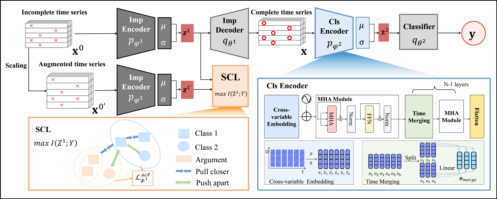
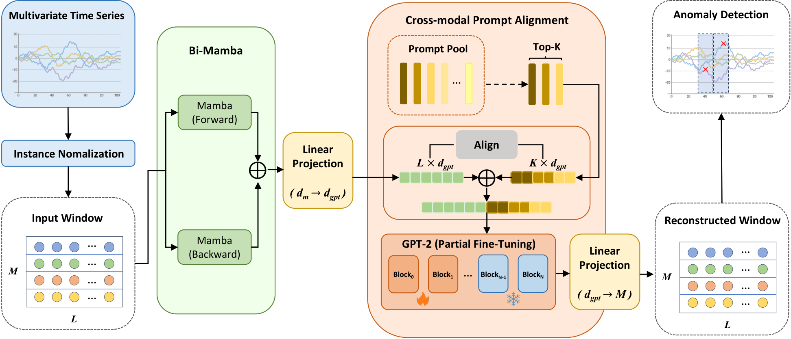

北京交通大学
计算机科学与技术学院 · 计算机技术硕士研究生
INSIS · 网络科学与智能系统研究所 ↗在 INSIS 开展时间序列与大语言模型方向的研究，关注时序数据的判别建模、可靠检测，以及大模型与专业时序任务的深度融合。
你好，我是
北京交通大学 · 计算机技术硕士研究生
研究不完整时间序列、异常检测与大语言模型。我希望把算法放进真实场景，让复杂信号变得可理解、可解释、可使用。
让模型理解时间，也让研究回应真实问题。
EDUCATION
从自动化到计算机技术，持续关注数据、模型与真实系统之间的连接。
计算机科学与技术学院 · 计算机技术硕士研究生
INSIS · 网络科学与智能系统研究所 ↗在 INSIS 开展时间序列与大语言模型方向的研究，关注时序数据的判别建模、可靠检测，以及大模型与专业时序任务的深度融合。
自动化 · 工学学士
人工智能学院科技创新协会 · 秘书处部长
负责面向全校非计算机专业学生的 C 语言教学与学习支持；主持社团文化活动及科技竞赛的策划与组织，包括 51、32 单片机大赛等。
INTERNSHIP
把时间序列算法落地到电信网络运维，让异常识别真正进入业务链路。
2025.05 — 2025.08
构建从光功率数据接入、资源拓扑分析到告警结论生成的自动化链路，识别陡升、陡降等劣化趋势。
解析多源日志与维度配置，构建无监督异常归因评分体系，并基于 YARN 完成海量日志批量分析。
RESEARCH & PROJECTS
围绕缺失信息、语义表达与跨模态对齐，探索时间序列建模的新方法。
面向医疗监测、交通感知等真实场景中普遍存在的不完整时间序列分类问题，研究重新审视了缺失数据的双重影响：它既会造成关键时序模式与动态信息的损失（Loss），也可能通过去除干扰带来判别收益（Gain）。针对传统方法过度关注“插补值是否接近原值”、却忽略“插补结果是否真正有利于分类”的局限，论文提出层次条件信息瓶颈（HCIB）框架，将数据插补、特征表示和下游分类统一到端到端优化过程中。
在插补层，HCIB 以标签信息为条件约束，提出任务信息充分性准则，尽量恢复与类别相关的缺失信息并抑制无关噪声；在表示层，通过层次信息瓶颈进一步压缩冗余、保留判别性时序表征，并利用监督式对比学习增强类内聚合与类间分离。方法在23 个多变量、单变量及自然缺失数据集上进行了系统验证，多变量任务相较次优方法平均提升约 7%，显示出在高缺失率场景下稳定的分类能力。
以标签信息作为条件约束，提出任务信息充分性准则，避免重建精度与分类效果脱节。
在插补层压缩冗余信息，在表示层学习紧凑且具有判别力的多尺度时序表征。
覆盖多变量、单变量与自然缺失数据，系统评估 20%—80% 不同缺失比例下的鲁棒性。

论文产出：TS-Aligner: Mamba-Based Prompt Alignment for LLM-Enhanced Time Series Anomaly Detection
针对连续数值信号与离散语言语义之间难以直接匹配的跨模态鸿沟，研究提出 TS-Aligner，将时间序列的动态结构转化为大语言模型能够理解和利用的提示表示。模型首先以 Bi-Mamba 同时建模前向与后向依赖，在保持线性复杂度的同时捕获长程、非线性时序模式；随后从可学习的 Prompt Pool 中动态检索 Top-K 语义锚点，使每个时间片段都能获得与自身状态相匹配的语言先验。
为避免时序特征被简单投影后产生语义漂移，框架加入显式几何对齐约束，在局部相似关系和全局分布层面共同拉近两种模态，并采用“两阶段训练”先稳定时序编码器、再联合优化对齐模块与部分 GPT-2 参数。最终利用重构误差完成异常定位，在 SMAP、SWaT、MSL、PSM、SMD 五个真实数据集上取得 4 项最优 AUC-ROC，并验证了仅使用 10% 训练数据时的低样本适应能力；相关论文已投稿 IEEE TII（SCIE、JCR Q1）。
通过双向选择性状态空间建模，同时利用前后文，以线性复杂度编码连续物理信号。
构建可学习提示池，按余弦相似度检索 Top-K 语义锚点，并加入显式几何对齐约束。
先预热时序编码器，再联合优化跨模态对齐与部分 GPT-2 参数，降低模态冲突。

SKILLS
以 Python 与 PyTorch 为主要工具，覆盖数据分析、模型训练与时序任务落地。
NOTES & EXPLORATION
记录正在思考的问题、持续积累的方向，以及可以继续交流的入口。
持续探索时序模式、语义原型与大模型隐空间之间更稳定的对齐方式。
查看公开仓库与持续更新。
打开主页 ↗ CONTACT研究、项目或合作交流。
发送邮件 ↗THANKS FOR VISITING